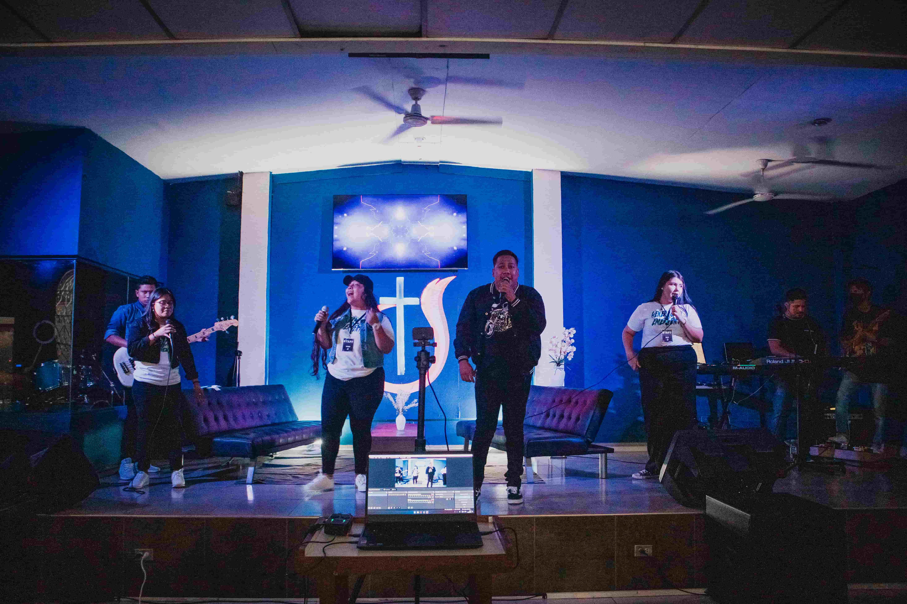
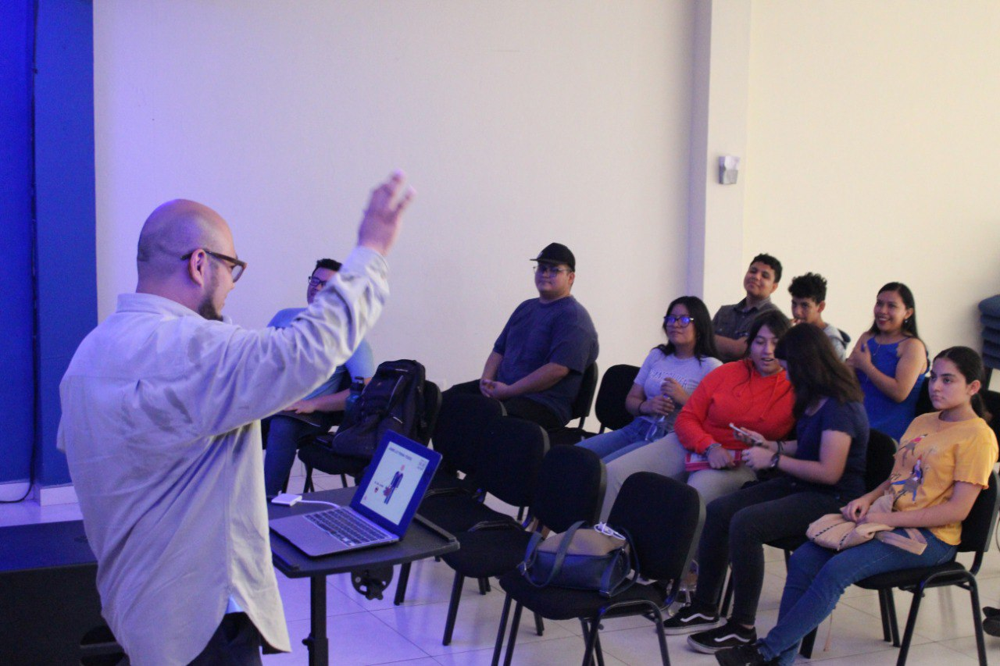
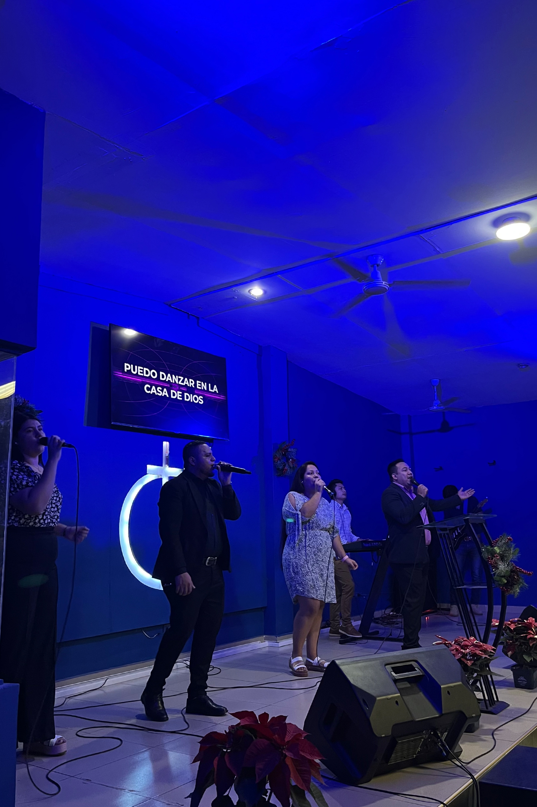
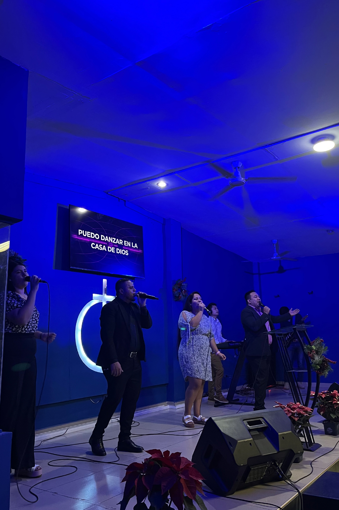

Seremos como una familia para ti
¡Ven y acompáñanos!



Iglesia de Dios BDR
Nuestros pastores generales Josué y Dalia Campos estarán muy emocionados de conocerte y saludarte. El pastor Josué Campos es Ministro Ordenado de la Iglesia de Dios en El Salvador.
Somos una iglesia ubicada en Bosques del Río en la ciudad de Soyapango, comprometida con alcanzar las familias y presentar un Evangelio que restaure y dé paz a las actuales y futuras generaciones.
¡Ven y acompáñanos!
Nuestra iglesia fue fundada en el año de 1984 por nuestro pastor Mario Amado Méndez. Desde entonces, la iglesia experimento un crecimiento y un desarrollo impactante en la ciudad de Soyapango; convirtiéndose para la década de los noventa en una de las iglesias más grandes de la Iglesia de Dios en El Salvador. Actualmente, la iglesia es liderada por nuestro pastor Josué Campos y su esposa Dalia, quienes con profundo amor y un comprometido equipo de liderazgo están interesados en pastorear a las generaciones actuales y las nuevas para el establecimiento del Evangelio de Cristo en la ciudad de Soyapango.
¡Se parte de nuestra gran familia!
 
